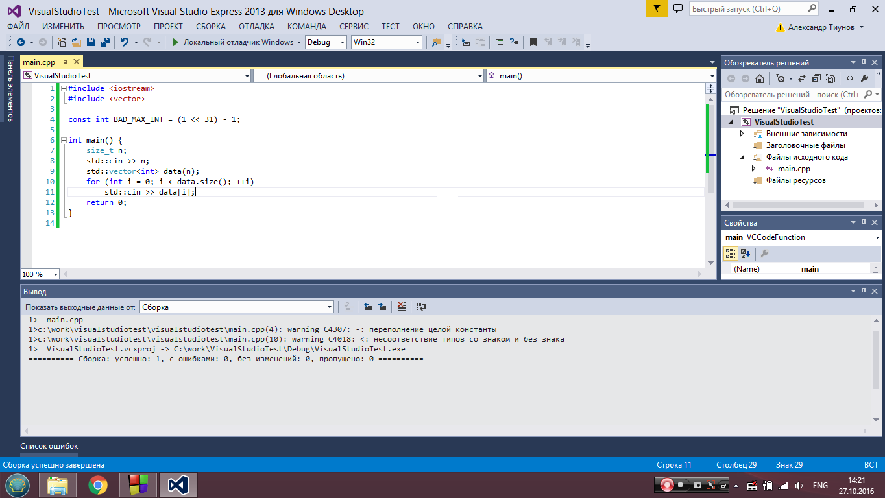
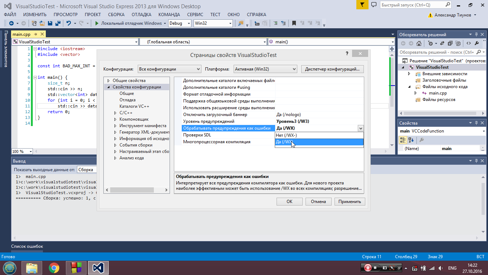
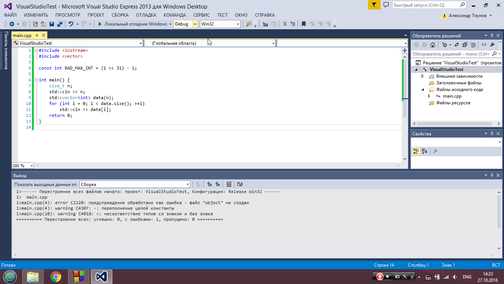
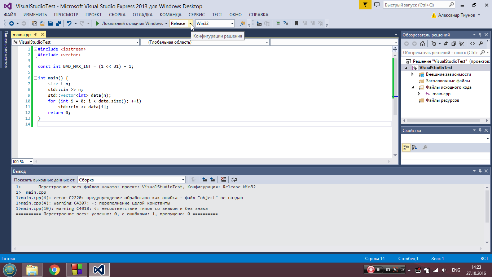
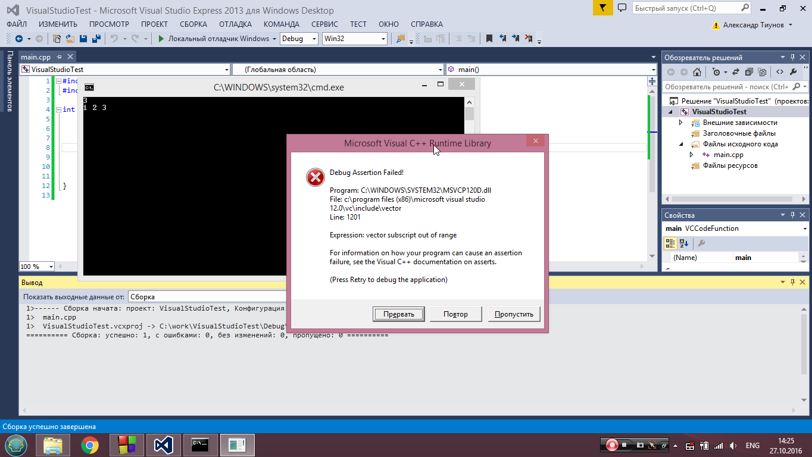
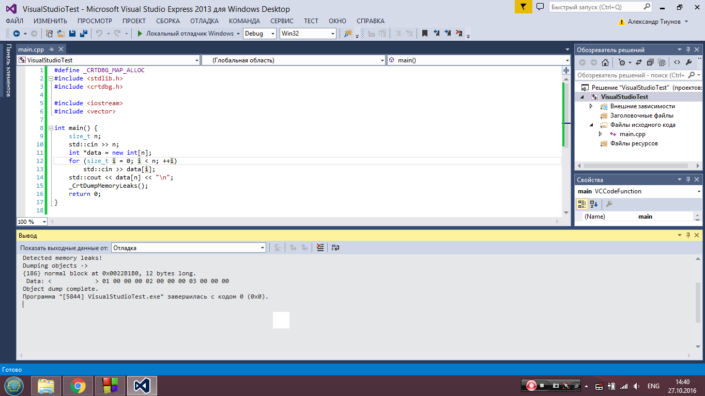
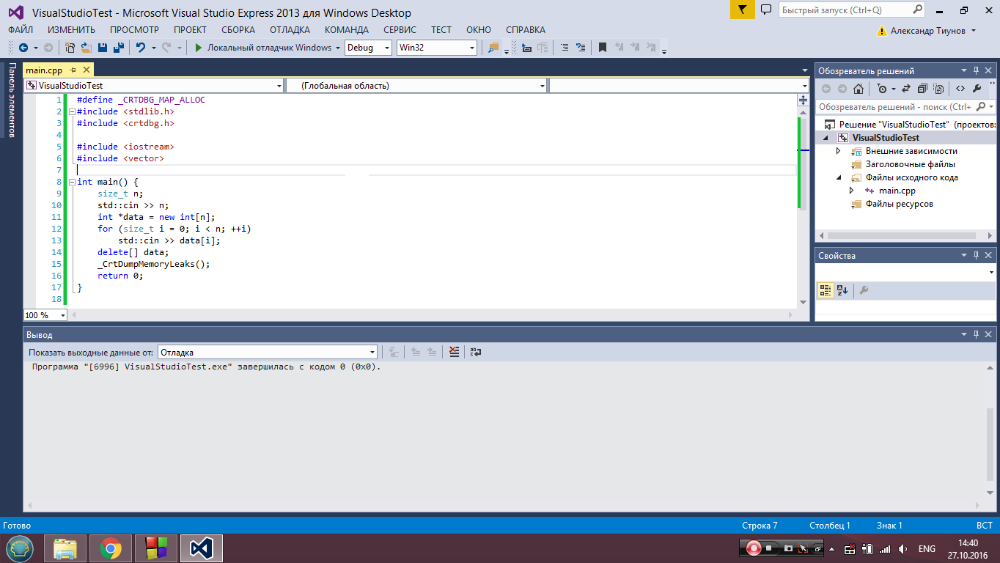

Как настроить окружение на своем компьютере
Введение
С недавнего времени на сервере используется новая схема тестирования решений, а точнее, отлавливается большее число ошибок за счет использования других ключей компиляции. Цель этой заметки — помочь вам получить такой же эффект на своей системе.
Помимо этого, описанные здесь рекомендации позволят вам организовать более качественное тестирование кода.
На сервере компилируется 2 варианта вашего решения, а именно:
g++-8 solution.cpp -std=c++17 -O2 -Wall -Werror -Wsign-compare -o fast_solution
g++-8 solution.cpp -fsanitize=address,undefined -fno-sanitize-recover=all -std=c++17 -O2 -Wall -Werror -Wsign-compare -o debug_solution
Здесь стоит отметить следующее:
-Wallи-Werror. Первый флаг заставляет компилятор выдавать дополнительные предупреждения, второй — трактовать любое предупреждение как ошибку компиляции. Таким образом, ваш код не должен давать ни одного предупреждения.-O2включает оптимизации кода.-std=c++17нужен для использования стандартаC++17. Если вы не особо обращаете внимание на используемый стандарт, то можете продолжать это делать и писать, как раньше. Остальные могут использовать все фишки нового стандарта.
Во втором случае решение компилируется с включенными санитайзерами. Любое обращение за пределы массива, знаковое переполнение целочисленных типов и любые подобные проявления некорректной работы с памятью и undefined behavior будут вызывать ошибку времени выполнения и приводить к вердикту Runtime Error на сервере, а не ситуации, когда ваша программа иногда работает, а иногда нет.
Обратите внимание, что -fsanitize=address также включает детектор утечек памяти. Поэтому, помимо контроля над тем, куда обращается ваша программа, на сервере также производится проверка, что в вашей программе нет утечек памяти (сделали new и не сделали delete). В подавляющем большинстве случаев вам вообще не нужно оперировать с динамической памятью вручную (например, для создания массивов используйте стандартные контейнеры вроде std::vector, которые правильно обращаются с памятью).
Поскольку санитайзеры вносят заметный оверхед в решение (значительно увеличивается потребляемая память и в несколько раз может возрасти время исполнения), то они используются только для запуска на маленьких тестах (обычно не более первых десяти в задаче), чтобы правильные решения не могли получить вердикты ML или TL.
Примеры кода
Давайте рассмотрим на примерах, как работает компилятор с указанным выше набором флагов. В этом разделе приведены комментарии по поведению gcc и clang в linux с включенными санитайзерами. Про другие ОС см. секции ниже.
Здесь происходит знаковое переполнение при вычислении BAD_MAX_INT, что порождает соответствующее предупреждение. В десятой строке происходит сравнение int и size_t, что также порождает предупреждение. Никогда не игнорируйте это предупреждение: при таком сравнении int приводится к беззнаковому типу, таким образом, неравенство -1 > size_t всегда выполнено. Этот код не компилируется с флагом -Werror.
#include <iostream>
#include <vector>
const int BAD_MAX_INT = (1 << 31) - 1;
int main() {
size_t n;
std::cin >> n;
std::vector<int> data(n);
for (int i = 0; i < data.size(); ++i) {
std::cin >> data[i];
}
return 0;
}
В этом примере происходит очевидный выход за пределы массива. Если заменить динамический массив на std::vector, произойдет то же самое. И gcc, и clang успешно отловят данную ошибку с включенными санитайзерами.
#include <iostream>
#include <vector>
int main() {
size_t n;
std::cin >> n;
int *data = new int[n];
for (size_t i = 0; i < n; ++i) {
std::cin >> data[i];
}
std::cout << data[n] << "\n";
delete[] data;
return 0;
}
В этом примере есть утечка памяти (нет delete[])
#include <iostream>
#include <vector>
int main() {
size_t n;
std::cin >> n;
int *data = new int[n];
for (size_t i = 0; i < n; ++i) {
std::cin >> data[i];
}
return 0;
}
Здесь возникает undefined behavior при переполнении (введем 2000000000 2000000000), который отловят и clang и gcc с включенным флагом -fsanitize=undefined.
#include <iostream>
int main() {
int a, b;
std::cin >> a >> b;
std::cout << a + b << "\n";
return 0;
}
Настройка на своей системе
Мы рекомендуем использовать среду Clion для разработки. Всем студентам ШАД предоставляется бесплатная лицензия, которую можно найти здесь. Вы можете работать из любой ОС, однако добиться поведения, описанного выше, можно только на Linux и Mac OS. Опыт показывает, что прохождение ШАДа с использованием Windows достаточно мучительно, поэтому лучше заранее озаботиться установкой Linux. Самый удобный вариант — развернуть VirtualBox. Если же у вас Windows 10, то еще одним вариантом будет установка WSL и его интеграция с Clion.
Ниже приведена инструкция для Clion.
Создайте новый проект, зайдите в File -> Settings -> Build,Execution,Deployment -> Cmake. Изначально там будет только один профиль Debug. Когда вы нажмете + добавится профиль Release, который пригодится в дальнейшем. Добавьте еще один профиль, назовите его ASAN. В Cmake Options запишите
-DCMAKE_BUILD_TYPE=ASAN
Отредактируйте ваш CmakeLists.txt. Он будет выглядеть примерно так:
cmake_minimum_required(VERSION 3.12)
project(my_project)
set(CMAKE_CXX_STANDARD 17)
set(CMAKE_CXX_FLAGS_ASAN "-g -fsanitize=address,undefined -fno-sanitize-recover=all"
CACHE STRING "Compiler flags in asan build"
FORCE)
add_executable(my_project main.cpp)
Теперь вы легко можете переключаться между разными видами сборок: Debug для пошагового дебага, Release для тестирования производительности, ASAN для запуска с санитайзерами.
Windows
На Windows без использования WSL санитайзеры не работают. Вы точно так же можете использовать Clion, но поддержки asan там не будет (если только вы не настроили интеграцию с WSL, см. ссылки выше).
Visual Studio
В Visual Studio полный аналог санитайзеров получить не получится (а именно, undefined), но эмулировать -fsanitize=address более-менее можно.
Для начала снова рассмотрим код с предупреждениями:

Зайдем в Проект -> Свойства. Дальше для всех конфигураций в свойствах конфигурации нужно выбрать следующий пункт:

Это аналог -Werror на сервере. Действительно, получаем ошибку компиляции:

То же самое и для конфигурации Release:

Рассмотрим теперь такой код:
#include <iostream>
#include <vector>
int main() {
size_t n;
std::cin >> n;
std::vector<int> data(n);
for (size_t i = 0; i < n; ++i) {
std::cin >> data[i];
}
std::cout << data[n] << "\n";
return 0;
}
Тут есть очевидный выход за границы массива. В Visual Studio в Debug режиме полностью проверяются все операции со стандартными контейнерами. Таким образом, запуск этого кода в Release отработает успешно, а вот в Debug вы получите примерно такую ошибку:

К сожалению, если вы используете просто динамическую память (см. пример кода 2), то даже в Debug режиме все отработает успешно. Это еще один повод использовать стандартные контейнеры.
Рассмотрим теперь третий пример, в котором происходит утечка памяти. В Visual Studio вы можете дописать в начало кода строки:
#define _CRTDBG_MAP_ALLOC
#include <stdlib.h>
#include <crtdbg.h>
Перед выходом из программы (перед return 0 в main например) добавьте строку
_CrtDumpMemoryLeaks();
Программа по-прежнему будет завершаться успешно, но в поток ошибок будет выведено следующее сообщение:

Проверим с delete[]:

Также обязательно запускайте ваше решение в конфигурации Release, потому что при этом включается -O2, что может приводить к другому поведению вашей программы (и на сервере тоже) в случае наличия в ней багов.
Mac OS
По сравнению с Linux, на маке необходимо произвести ряд дополнительных действий, чтобы получить такое же поведение. Для начала обязательно установите gcc из brew, никогда не используйте системный gcc. Выполните
brew install gcc
Чтобы проверить, что gcc установился правильно, выполните (10 нужно заменить на версию gсс, установленную brew):
g++-10 --version # выведет полную версию g++
which g++-10 # выведет полный путь к компилятору, например /usr/local/bin/g++-10
Далее необходимо прописать путь к новому компилятору в настройках Clion. Для этого зайдите в File -> Settings -> Build,Execution,Deployment -> Toolchains и в C++ compiler пропишите полный путь к компилятору.
Далее, обратите внимание, что по умолчанию под маком asan не включает проверку на утечки памяти. Чтобы этого избежать, добавьте строчку
export ASAN_OPTIONS=detect_leaks=1
в файл
~/.MacOSX/environment.plist
Иногда на маках при компиляции с asanом может выпадать большое количество ошибок, не связанных с вашим кодом. В этом случае попробуйте добавить флаг -fsanitize-undefined-trap-on-error для asan-сборки (переменная CMAKE_CXX_FLAGS_ASAN в CmakeLists.txt).
Проверка на соответствие стайлгайду и форматирование кода
Инструкция ниже для Linux и Mac OS.
Вам понадобятся утилиты clang-format и clang-tidy, они обычно есть в стандартных репозиториях (apt-get install или brew install). Для clang-format вы можете взять конфиг отсюда, а для clang-tidy
отсюда.
Положите эти файлы в директорию с кодом или в домашнюю директорию. Для форматирования кода выполните
clang-format -i main.cpp
Вы также можете настроить автоматическое форматирование кода с помощью этой утилиты в clion.
Для дополнительных проверок на именование переменных, функций и прочего выполните
clang-tidy main.cpp -- -std=c++17